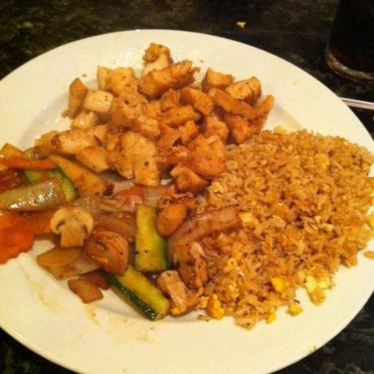

Chicken Fried Rice

This recipe is one that I'm pretty sure everyone is faking that they like. I think it's alright and nothing like the hibachi restaurant.
But everyone raves about it so I'll share it here.
Ingredients
- Rice
- Chicken
- Egg
- Soy Sauce
- Butter
- Salt
- Pepper
Steps
- Make rice in cooker the night before.
- MAKE SURE YOU WASH YOUR RICE.
- In a pan add some oil.
- Crack your egg and let it start to fry. Scramble it.
- Add rice, with a heap of butter.
- Add soy sauce until it's the proper color.
- In another pan heat up oil.
- Add chicken and butter.
- Cook until proper temperature.
- If you want veggies, make those in another pan.
- Combine ingredients and serve.